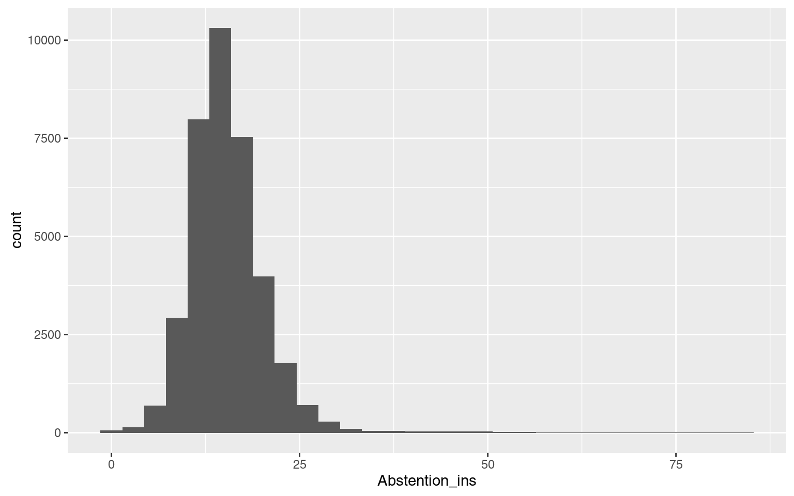

Introduction aux outils d’analyse de données et à R
Introduction aux outils d’analyse de données et à R
- 1 Préambule
- 2 Les matériaux nécessaires pour cette formation
- 3 Les étapes de la formation :
- 3.1 Première démo :
- 3.2 La donnée ?
- 3.3 Qu’est ce que l’open data ?
- 3.4 Qu’est ce que le big data ?
- 3.5 Qu’est ce que le linked data ?
- 3.6 Pourquoi s’intéresser à l’analyse des données ?
- 3.7 Et vous pourquoi ça vous intéresse ?
- 3.8 L’écosystème des données
- 3.9 Les outils
- 3.10 Les infrastructures
- 3.11 One tool to rule them all
- 3.12 C’est quoi tes données?
- 4 Installation de R
- 5 Vocabulaire de R
- 6 Commandes de R
- 7 Interface de R Studio
- 8 Scripts et projets sur R
- 9 Importer des données
- 10 Afficher les données
- 11 Sauvegarder des données ?
- 12 Nettoyer les données - tidy data
- 13 Transformer les données
- 14 Pivoter (
gatheretspread, du packagetidyr) - 15 Quelques autres fonctions utiles
- 16 Agréger un jeu de données (
group_by+summarise) - 17 Fusionner (
left_join)
1 Préambule
Cette documentation est le fruit d’un travail collaboratif, réalisé par les participants à la formation organisée par Open Data France et datactivi.st. Un grand merci à eux !
Elle accompagne les supports de formation suivants :
- les slides de la première journée
- les slides de la deuxième journée
- les slides de la troisième journée
- le script R reprenant les principales manipulations de données effectuées durant ces trois jours.
La documentation correspondant au module suivant, “Utiliser R pour l’analyse et la visualisation de données”, peut être retrouvée ici.
L’ensemble de ces matériaux peut être retrouvé sur le repo github dédié.
L’ensemble de ces matériaux est placé, sauf mention contraire, sous licence Creative Commons CC-BY-SA.
2 Les matériaux nécessaires pour cette formation
- Une bonne connexion internet pour tous
- Un ordinateur par personne
- Toute la documentation de la formation : www.github.com/datactivist/introR_ODF
Pour le formateur :
- préparer les démo
3 Les étapes de la formation :
3.1 Première démo :
Les participants renseignent le formulaire (http://frama.link/formationR) qui demande des informations basiques sur les participants. Ce formulaire sert de démonstration des usages potentiels de R.
Comment connecter un simple formulaire Google Form, ses données récoltées dans un tableur et les visualiser très simplement avec des petits modules de graphes ou de cartes sur une page HTML construite automatiquement.
Le formateur a créé préalablement un code R qui permet de visualiser en temps réel un dashboard qui présente les résultats.
La force de R, c’est de permettre d’utiliser un code simple et concis (70 lignes dans ce cas). Il faut une heure à une heure et demi pour l’écrire.
3.2 La donnée ?
Selon vous, qu’est ce qu’une donnée ?
- Quantification
- Une couleur c’est une donnée
- Une information pas forcément lisible immédiatement, lisible par un logiciel
- Lisible par un humain
- Textuel ou numérique
- Une information structurée
- Quantification / Qualification d’un phénomène
La loi (CRPA) : donnée, lisible par machine
- Définition inclusive ==/== restrictive
« Ce qui n’est pas considéré comme une donnée est une donnée »
Comment ouvrir des données et se demander lesquelles sont à ouvrir ou pas?
Ile de France: Les agents doivent se justifier en cas d’un refus d’ouverture de données.
Avec la Loi pour une République Numérique, cette question de ce qu’est une donnée va devenir de plus en plus importante.
R est plus ou moins bien adapté pour traiter certains types/formats, il va falloir donc savoir à l’avance lesquelles vont représenter plus de travail ou pas à traiter avec R
« Raw data is an oxymoron » / les données brutes sont un oxymore.
RUSSELL ACKOFF - Théoricien des systèmes & cybernétique
« Il faut que l’information circule pour qu’elle ne disparaisse pas. » Sa vision: Les données seraient brutes par essence. Si on ouvre les données, on va créer plus de savoir et plus de sagesse.
Notion de données, 2 dimensions :
- pas de condition de véracité (Rosenberg, 2013)
- point de départ de nouveaux réseaux sociotechniques
Les données sont obtenues : « Décidément, on ne devrait jamais parler de “données”, mais toujours d’“obtenues”. » Bruno Latour, 1993
En statistiques, la définition de la donnée varie un peu selon le cadre conceptuel et philosophique. D’un côté, les fréquentistes, pour qui on peut tester la véracité d’énoncés au moyen d’expériences et de tests statistiques. Chaque épreuve se déroule indépendamment des croyances ou connaissances préalables. Pour les bayésiens, au contraire, il y a beaucoup plus de doutes à avoir vis-à-vis de l’objectivation du monde, c’est une approche beaucoup moins naïve qui porte sur la quantification des croyances sur le monde, qui intègre les croyances ou connaissances qu’on a déjà. Dans ce contexte, les données permettent de mettre à jour ces croyances mais n’en sont pas radicalement distinctes.
3.3 Qu’est ce que l’open data ?
Voir la définition de l’Open Definition
OD : données réutilisables dans des formats techniques et juridiques (2 licences : Licence Ouverte (citer la source - BY) et ODbL (citer la source + partager à l’identique : BY - SA)).
Les données sont généralement gratuites.
Réutilisation par tous, pour toutes formes d’usages.
Lisibles par machines.
Principes:
- Données accessibles
- Format ouvert
- Usage: attribuer à la source et redistribuer à l’identique
3.4 Qu’est ce que le big data ?

Big Data : règle des 3 V (Vélocité, Volume, Variété) : hors des GAFA, on rencontre rarement des données massives qui respectent ces trois critères. Voir cet article de Samuel Goëta qui permet de bien distinguer open data et big data. Ces données ne sont en général pas ouvertes, c’est un trésor bien gardé des organisations.
3.5 Qu’est ce que le linked data ?
Web Sémantique proposé par Tim Berners-Lee (4ème et 5ème étoiles du modèle 5* de T. Berners-Lee). Données liées, Données décrites dans des vocabulaires, des nomenclatures. Encore considéré comme une utopie, le Linked Data demeure malgré tout un objectif qualitatif intéressant
Un outil intéressant pour se rappeler des 5 * : le mug !
3.6 Pourquoi s’intéresser à l’analyse des données ?
La maîtrise de l’information est un élément essentiel du rapport au pouvoir (empowerment, donnée de capacités d’action)
- Professionnellement
- Personnellement, mouvement du self data : données pour reprise en main de certaines parties de sa vie.

- Littératie de donnée
- En tant que citoyen, déconstruire les algorithmes et se réapproprier les données qui servent à la décision publique
Les données ne signifient rien à l’état brut. C’est un modèle qui permet de les interpréter : on fait des hypothèses sur le rapport des données avec la réalité et on donne du sens aux données pour confirmer/infirmer ce modèle.

fatal experience - http://gph.is/29hJuIt
Tout modèle vient avec des postulats. Il y a toujours un modèle. Quand il n’y en a pas, il est implicite.
Il faut donc expliciter nos modèles. Ex. de la taille : si je fais la moyenne, il faut que la distribution soit unimodale (il y a une seule valeur maximale). Si on fait la moyenne des tailles dans cette salle, c’est bimodal puisqu’il y a deux distributions différentes de la taille : les hommes et les femmes (la courbe de taille prendra la forme d’un chapeau mou avec 2 pics). La moyenne n’a aucun sens dans ce cas, ne correspond pas à une valeur interprétable. Dans ce contexte, calculer la moyenne n’a pas d’intérêt, il faut expliciter son modèle et l’adapter aux cas. La moyenne est un indicateur adapté lorsque la distribution est à peu près normale (en courbe de Gauss).
S’initier à l’analyse de données, c’est apprendre à expliciter ses modèles, formuler les hypothèses sous-jacentes, les tester. Les aller-retours entre visualisations et modèle permettent de mieux préciser sa démarche. Référence : Edward Tufte
In fine, il s’agit d’appréhender ses données de manière moins naïve.
Le workflow de l’analyse de données :

En amont, import et nettoyage (phases souvent très consommatrices en temps); en aval, communication.
Importer -> Nettoyer -> Transformer -> Visualiser -> Modéliser -> Communiquer
De Transformer à Modéliser : peut être une boucle jusqu’à obtention d’un résultat satisfaisant.
3.7 Et vous pourquoi ça vous intéresse ?
Eléments de réponse fournis :
- Se doter de méthodes / outils de nettoyage et transformation
- Mieux faire parler des données brutes, utiliser davantage nos propres données
- Élargir la palette d’outils d’analyse de données
- Trouver une manière de rassembler des méthodes ou outils aujourd’hui utilisés par des services différents
- Faciliter les croisements de données
- Coordonner transversalement des personnes qui utilisent déjà des données (BI, SIG, …)
R : outil fonctionnant en ligne de commandes -> on documente ce qu’on fait, ce qui facilite la reproductibilité des différentes composantes du workflow ci-dessus (gain en efficacité).
3.8 L’écosystème des données
Outils déjà utilisés par les participants :
- Excel / Calc / tableur classique
- SPSS, SPAD
- Tableau
- BO
- Open Refine (utilisation pour du nettoyage de données ou du géocodage) : www.openrefine.org
- CartoDB (visualisation)
- ESRI, QGis, MapInfo (carto)
Formats de données :

Ciel mon tableur ! - http://gph.is/29aFBC1
- tabulaires (voir RIO (R Input Output))
- Excel / tableurs
- formats texte (csv, tsv, csvy, psv, fwf) : ont l’avantage d’être publiquement documentés et relativement facilement exploitables par des machines. Moins facile à lire pour les humains
- Datapackages : format standardisé proposé par OpenKnowledge (csv avec métadonnées en JSON pour le tabulaire), mais encore peu répandu (quelques usages significatifs sur des thématiques ciblées comme les marchés publics)
- feather : format d’échange entre R et Python par ex. Avantage : lecture/écriture disque très rapide. Très prometteur lorsqu’il y a des échanges de gros volumes de données entre plusieurs langages
- formats propriétaires dans le domaine des statistiques :
- .dta
- .sav, .por
- .dbf (attention, versions incompatibles entre elles)
- .sas7bdat, .xpt
- …
- Formats plus exotiques :
- XML
- HTML
- JSON (la bascule vers des données tabulaires n’est pas triviale)
- YAML (souvent utilisé pour stocker des méta-données)
- …
- Formats spécialisés
- Exemple des données spatiales :
- GDAL et sa version R (RGDAL : gère 132 formats)
- Shapefile (format propriétaire qui s’est imposé comme le standard malgré ses nombreux défauts : pas très bien documenté avec des limitations qui nuisent à l’intelligibilité)
- GeoJSON : format ouvert, texte
- topojson : format de données spatiales topologiques (intéressant à plusieurs points de vue)
- kml (xml spécialisé en données spatiales)
- mapinfo
- formats raster (stockage plus économique que les formats vectoriels mais dégradation de la qualité lors des zooms)
- tiles
- …
- Exemple des données spatiales :
Bases de données :
- Surtout intéressantes sur de la donnée chaude (i.e. susceptible de changer souvent)
- Bases relationnelles / SQL (orientées ligne, c’est-à-dire adaptées pour insérer, lire, mettre à jour des lignes de données) : leur performance est fortement corrélée à la manière dont les données sont indexées, ce qui est un inconvénient car il faut avoir très bien pensé son système et ses usages avant de le mettre en oeuvre
- MySQL
- SQLite (pour des volumes pas trop importants, bien adapté pour de l’électronique embarquée)
- PostgresSQL : capacité de gestion spatiale intéressante (PostGIS) mais complexité d’administration
- …
- Bases SQL orientées colonnes : elles sont optimisées pour lire des colonnes, adaptées pour des analyses globales sur l’ensemble du contenu d’une base
- MonetDB, MonetDBLite (utilisable dans R sans installation externe et performante, l’indexation s’effectuant à la volée)
- …
- Bases NoSQL : bases qui ne reposent pas seulement sur une logique SQL ou tabulaire (a priori, on peut avoir différents types de données : fichiers, images, textes, etc.). Théoriquement, il n’est pas nécessaire de connaître le schéma de la table (possibilité de modifications du schéma de données en cours de route). Du coup, l’indexation est moins efficace que sur des bases SQL, ce qui amène des acteurs à mélanger des bases NoSQL et SQL pour répondre à ce souci
- MongoDB
- Cassandra
- CouchDB
- SimpleDB
- BigTable
- HBase
- Neo4J (base orientée graphe : les enregistrements stockés sont connectés les uns aux autres)
- Redis
- …
Les API : moyen de communication entre 2 machines - https://fr.wikipedia.org/wiki/Interface_de_programmation
Beaucoup de formats de données et de types des bases de données, d’où de nombreux outils d’exploitation des données …
3.9 Les outils
Ceux qu’on a l’habitude d’utiliser ou que tout le monde connaît :
- Excel, LibreOffice, un tableur quelconque
- Inconvénients : se présentent comme des outils gérant des données tabulaires mais mélangent des éléments très hétérogènes, ce qui rend les données issues de ce type d’outils difficilement exploitables par des machines. Aujourd’hui, cela conduit à l’apparition d’outils qui gèrent réellement des données tabulaires avec des interfaces graphiques csv
Outils avec interface graphique (GUI)
- Sphinx
- SPSS
- SAS : qualité reconnue (outil préférentiel de l’INSEE jusqu’à présent; coûte très cher)
- OpenRefine
- WTF CSV : permet d’avoir une 1ère vision du contenu d’un fichier CSV sans entrer dans un outil comme R
- Tableau : permet de faire de la belle dataviz, mais propriétaire
Outils avec une interface en lignes de commande (CLI)
- Python
- Julia (courbe très ascendante pour ce langage encore très jeune)
- R
- C/C++ (une tendance actuelle dans l’utilisation de R est d’écrire les algos les plus gourmands en C++)
- Java
- Javascript : langage interprété dont les utilisations se sont étendues
- outils bash : outils qui peuvent demeurer performants mais très mals documentés et difficiles à utiliser
Tous ces outils CLI s’interfacent très bien avec R.
Outils spécialisés. Ex: cas de la cartographie :
- QGis : lourd à mettre en oeuvre
- PhilCarto : permet de réaliser de la cartographie thématique. Mérite le coup d’oeil, mais mets des lunettes 80’s ;-). Propriétaire.
- MapInfo
- ArcGIS
- Umap : bien adapté pour les débutants.
- Leaflet : librairie Javascript permettant de faire de la cartographie (s’interface bien avec R)
3.10 Les infrastructures
Celles qui se développent dans le Big Data (utilisent la parallélisation pour optimiser les traitements de données et distribuer les stockages de celles-ci) :
- Hadoop
- Spark
- H20
- …
3.11 One tool to rule them all
Un outil, R, pour aller visiter l’ensemble de ces univers. Initialement conçu pour la manipulation des données.
R prend la suite de S : langage de haut niveau (= proche d’un langage compréhensible par l’homme mais relativement inefficace en terme de performances)
S langage développé dans les Bell Labs. R a été développé à l’origine par des universitaires statisticiens, pour répondre à leurs besoins, sans restrictions de licences (-> caractère libre) Le développement historique de R s’est opéré par l’intermédiaire des packages (décentralisés) développés autour du coeur du langage (qui est demeuré très stable depuis le départ). R est devenu leader incontesté dans le domaine des statistiques avec une forte communauté internationale. Au fil du temps, il est devenu un outil à vocation généraliste (dév. Web, machine learning, etc.). Par ailleurs, il permet d’interfacer de nombreux outils spécialisés (grâce à l’appel de librairies).
Énormément de ressources disponibles (souvent en anglais même si la communauté et les ressources françaises se développent). Une petite sélection :
- Un livre sur R : R for Data Science de Garrett Grolemund et Hadley Wickham (rock star de R)
- blogs :
- des listes de diffusion thématiques
- un site de Q/R communautaires : http://stackoverflow.com/tagged/r
- twitter avec le hashtag #Rstats
Une communauté bienveillance avec les femmes.
Une syntaxe de plus en plus facile
3.12 C’est quoi tes données?
Les questions auxquelles il faut savoir répondre :
- domaine
- format
- taille
- granularité
- fraîcheur
- quelle analyse veut-on en faire
4 Installation de R
- Installation de R
- Sous windows télécharger R Tools
- Sous MacOS X il faut probablement installer les “command line tools” ou un compilateur gcc (pour pouvoir compiler des packages lorsque nécessaire)
- Installer ensuite Rstudio
4.1 Installation du tidyverse
Qu’est ce que le tidyverse ?
- Le tidyverse est une suite de packages qui ont pour objet d’opérationnaliser le cycle d’analyse, depuis l’import des données jusqu’à leur représentation finale en passant par toute les étapes. Il a été développé par Hadley Wickham, connu essentiellement par son prénom dans la communauté (c’est un personnage important !). Parfois surnommé “hadleyverse” tant il est renommé, Hadley a demandé à ce qu’il soit nommé tidyverse pour valoriser la communauté et insister sur la notion de tidy data.
- Liste des packages du tidyverse : broom, DBI, dplyr, forcats, ggplot2, haven, httr, hms, jsonlite, lubridate, magrittr, modelr, purrr, readr, readxl, stringr, tibble, rvest, tidyr, xml2 (https://cran.r-project.org/web/packages/tidyverse/index.html).
- Pour installer le tidyverse, entrez dans la console :
install.packages("tidyverse")puis appuyer sur entrée.- Si un warning s’affiche en précisant que le package n’est pas sous forme binaire, spécifier l’argument
type="source"dans l’appel à la fonctioninstall.packages() - Au passage, on voit que RStudio apporte une couche d’assistance en proposant les arguments de la fonction
install.packages - Si le bouton “Stop” (en haut à droite de la console de Rstudio) est affiché et que le symbole « > » (invite de commande) n’est pas affiché, cela signifie que R continue de travailler.
- Si un warning s’affiche en précisant que le package n’est pas sous forme binaire, spécifier l’argument
- Quand c’est terminé on a le texte : *The downloaded binary packages are in C:_user_packages* (ou équivalent)
- L’invite de commande est revenue : c’est ce symbole en début de ligne : « > »
- Il est également possible d’installer des packages individuellement via Rstudio (bouton Install à droite de l’IHM). Logique de R : tout peut être fait en lignes de commande.
4.2 Lancement du tidyverse :
- Taper library(tidyverse), R Studio propose tidyverse. Si la console affiche des conflits, ne pas en tenir compte (tidyverse informe simplement à titre préventif).
5 Vocabulaire de R
- Package = bouts de code stockés sur le disque dur. Si on veut utiliser fonctions de ces packages, on va charger les packages : R va lire le code qui est contenu dans le package. Le code des packages est approuvé par la communauté avec des contrôles de qualité automatisés pour vérifier leur fonctionnement. De plus en plus de packages ne sont pas publiés sur CRAN (officiel) mais passent par Github où il n’y a pas le contrôle qualité (démarche entièrement “libre”).
- Logiciel interprété : chaque ligne de commande est exécutée séquentiellement. On envoie une ligne de commande, l’ordinateur l’interprète et l’éxécute. Après, on peut reprendre la main.
librarypermet de charger en mémoire un package et rendre disponible les fonctions.- Environnement : tous les objets que nous allons utiliser dans R.
- L’historique reprend les différentes instructions qui ont été tapés dans le terminal.
- Script : fichier texte ave des instructions pour R.
6 Commandes de R
Tout ce qu’on utilise dans R : des fonctions et des données
library: chargement d’un packagesrm: suppression d’un objetglimpse: pré-visualiser un jeu de données
7 Interface de R Studio
- La console (généralement en bas à gauche) : fenêtre essentielle, exactement la même chose que si vous le lanciez dans un Terminal (en tapant R en ligne de commande), l’interface basique pour échanger avec un ordinateur. Le terminal permet de taper du texte et de voir la réponse de l’ordinateur.
- Possibilité de changer les couleurs de l’interface de R Studio : aller dans onglet Options/Apparences.
- Global Environment (en haut à droite) > contient tous les objets /fonctions que l’on va utiliser dans R
- L’onglet “Packages” (en bas à droite) contient la liste de tous les packages installés, et permet d’en installer d’autres. On peut voir ceux qui sont chargés (cochés) et ceux qui ne le sont pas (case vide)
- Onglet History (en haut à droite) : historique des commandes exécutées (historique recherchable, ce qui facilite la récupération d’anciennes commandes)
- Onglet Files (en bas à droite) qui est un explorateur de fichiers de l’ordinateur. Par défaut, affiche le chemin du dossier de travail (working directory), le dossier du disque dur dans lequel R travaille.
- Plots (en bas à droite) : Affiche les graphiques
- L’onglet Help (en bas à droite) sert à rechercher toutes les fonctions documentées sur lesquelles on trouve un premier niveau d’aide. Documentation donne les arguments possibles de chaque package ou programmeet décrit le fonctionnement de ces arguments avec des exemples d’appels de fonctions .
- Onglet Viewer (en vas à droite) : permet de visualiser les pages HTML et Javascript.
8 Scripts et projets sur R
- Ajout d’un nouveau script : bouton en haut à droite avec la petite croix > Add a R script.
- Bonne pratique : Ne jamais écrire dans la console (pour ne pas perdre l’historique de mes actions).
- Le script contient de la colaration syntaxique qui permet de mieux comprendre son code.
- Bonne pratique : une nouvelle ligne = une nouvelle instruction
Il y a des packages de données, entrer
library(airlines)dans le script par exemple.Les scripts s’enregistrent et se sauvegardent mais contrairement à la console, il ne se passe rien directement.
library(tidyverse)dans le script et appuyer sur ctrl-entrée (Windows, Linux) ou pomme-entrée (Mac). Possibilité aussi d’appuyer sur le bouton Run => exécute l’instruction (ligne par ligne).- Projet dans RStudio : crée un environnement dédié dans lequel on a les données, les scripts, l’historique.
- Bonne pratique : travailler toujours dans un projet puisque c’est uniquement dans un “projet” qu’on pourra avoir un historique
- “New directory” : on définit le répertoire dans lequel les différents éléments du projet (scripts, fonctions, données) seront stockés
- “Existing directory” : ouvrir un projet déjà existant
- “Version control” : suivre méthodiquement en comparant les différentes versions successives des fichiers textes. L’outil le plus répandu pour ça pour Git. Plateforme la plus connue : github (mais Dropbox fait du controle de version). Controle de version n’écrase pas les versions, en cas d’accident, on peut revenir en arrière : tous les états successifs sont stockés. Les projets peuvent être collaboratifs, on peut documenter qui a fait quoi, qui a écrit telle ligne et permet de créditer les contributeurs.
- Bonne pratique : soumettre son code à un versioning. Une sauvegarde s’appelle un “Commit”. On peut commenter les versions pour suivre l’évolution du projet
Possibilité de créer directement à partir d’un dossier Github. 1 - Aller sur une page Github > Cliquer sur “Clone or Download” > Copie de l’URL. 2- Aller sur R, ouvrir un Nouveau projet > Controle de version et coller cette URL
Controle de version : inclut une gestion des droits, avec un clone je ne peux pas écrire sauf si sur Github ou Gitlab le propriétaire donne des droits d’écriture. Possibilité de pull request (proposer une modification au propriétaire du dossier Git).
- Créer un nouveau projet, 3 options:
Empty > faire un nouveau projet videR Package > écrire un packageShiny Web Application > une app automatique
- On crée un nouveau projet
- En haut à droite, cliquer sur new project
- Empty project
- Donner un nom au directory (ex. jour 2) puis indiquer où placer de dossier sur le disque dur
- Si on veut travailler sur 2 projets en parallèle:
- Cliquer sur “Open in New Session”
8.1 Créer un Notebook
️Disponible uniquement dans la preview de RStudio (beta mais stable)
- Dans le panneau de script, il est possible d’ouvrir un notebook afin de visualiser les résultats des commandes dans le script même.
- Notebook : avoir du texte, avec du code dedans et le résultat du code (généré à la volée)
- A priori, les notebooks ne sont pour l’instant disponibles que dans la version Preview (version beta mais stable dans la mesure où elle est rendue disponible)
- Bien adapté pour faire une analyse interactive.
- Différent d’un script où il n’y a que du code R
8.2 Créer un R Markdown
- Markdown: un langage, une syntaxe qui fait une mise en forme minimaliste d’un texte (gras, italique etc..)
- Guide de la syntaxe Markdown
- Très léger, simple, puissant car peut générer dess documents dans plein de formats
RMarkdown : permet de prévoir la mise en page du résultat final sous la forme soit d’une page web soit d’un fichier PDF (demande l’installation de Latex sur sa machine mais pas besoin de connaitre le langage). Très pratique pour générer directement le résultat de son travail.
- Pour l’installer, on peut passer par le gestionnaire de packages.️ Installer
rmarkdownet nonmarkdown - Avec RMarkdown, je peux générer des documents, des présentations, des applications interactives avec Shiny
Il existe des templates R Markdown, soit des modules prédéfinis. Ce sont des packages à installer, de la même manière que
tidyversepar exemple.
8.3 Création d’un script
- Commentaires : la ligne est préfixée par
#- Bonne pratique : essentiel de documenter le plus explicitement possible et le plus abondamment possible
- On peut aller jusqu’à une ligne de commentaires par ligne de code
- Il est tout à fait possible de se laisser guider par les suggestions de fonctions de Rstudio.
- Exemple: si on tape “lib”, l’outil nous suggère “library” avec les arguments nécessaires. , en popup.
- Bien regarder les valeurs par défaut dans la popup!
Auto-complétion avec Tab ou Entrée
- Dans
R, 2 catégories d’êtres :- Objet: stocker “quelque chose”
- Fonction : agissent sur des objets , à partir d’inputs produit des outputs
- Chaque fonction produit une valeur (elle répond par un objet). Les inputs sont les arguments d’une fonction.
- Parfois une fonction ne renvoit pas forcément de résultat ou de valeur, mais elle produit un effet de bord, par exemple, quand on charge un package.
Ex. : library, on voit s’afficher les arguments dans une petite fenêtre qui s’affiche. Quand il y a une valeur, c’est une valeur par défaut (ils sont implicites, à moins de vouloir les modifier). Certains sont obligatoires : pour library, c’est le nom du package.
- 2 types de problèmes possibles au cours de l’exécution du code :
- Le
warningn’arrête pas l’exécution du code. error: arrête l’exécution du code.
- Le
Autant que possible, évitons de les rencontrer.
Donc dans
library, on met l’argumenttidyverse. On écrit dans le script :library(tidyverse).- La console affiche des messages (c’est en rouge mais pas de problème, incohérence de R…).
On a pas besoin d’écrire
"tidyverse"avec les guillemets. R a été fait pour des usagers sans forte compétence technique. La bonne pratique aurait été de mettre des guillemets car c’est un argument de type chaine de caractères.
9 Importer des données
9.1 Sur le format CSV
- CSV est venu des pratiques > différentes interprétations.
- Il n’est pas forcément lisible par le logiciel… > nettoyage
- Principes de base d’un fichier CSV : c’est un fichier texte
- Les sauts de ligne sont matérialisés par des sauts de ligne (
\n) - Chaque valeur est séparée par des virgules dans les pays anglo-saxons (parce qu’ils utilisent le “.” (point) pour séparer les valeurs numériques)
Le séparateur en France est le point virgule.
- Bonne pratiques :
- Nom des colonnes sur la 1ère ligne.
- Mettre le texte entre guillemets –> HYPER IMPORTANT pour signifier que c’est du texte et non des valeurs numériques
- Cas de la corse : codes départements interprétés comme valeurs numériques… mais le logiciel affiche “erreur” une fois arrivé à la Corse (2A, 2B)
- Les cellules fusionnées sont à gérer comme des cellules vides, comme les commentaires
- Voir le guide de Christophe Libert sur les fichiers CSV
- Il existe différentes propositions de standardisation (RFC 4180 est un standard CSV proposé)
- La norme ASCII existe pour les caractères latins mais sans accents. Le RFC 4180 l’utilise
- Norme unicode : permet d’avoir les accents. Excel l’utilise par défaut (ouas, ça dépend des OS !)
- Libre Office gère plus facilement les fichiers avec des points virgule.
- Passer d’un Excel à un CSV ne garantie pas une standardisation du CSV.
- Un fichier CSV n’est pas forcément lisible par les machines
- Mais on a des outils de validation du CSV
- Dans les méta-données, on devrait signaler l’encodage et le caractère de séparation.
- Peu de fichiers sont très bien expliqués (avec description des colonnes).
Tendance : faire des meta-données qui s’interprètent automatiquement (lisibles par une machine). Avoir les métadonnées permettrait d’avoir une bonne auto interprétation d’un fichier.
9.2 Avec l’interface graphique
- Dans le panel ‘environnement’ > Pour charger des données, il faut aller sur “import dataset” et choisir le fichier qui nous intéresse : soit sur le disque car on avait prévu l’affaire au préalable, soit en ligne en indiquant l’URL.
- R supporte les fichiers CSV, les fichiers Excel (xls et xlsx), Stata, SPSS. Pas LibreOffice (ods).
- Si le fichier que l’on importe a les données séparées par des ; au lieu de , il faut aller dans la boite de dialogue Delimiter et sélectionner semicolon au lieu de comma et tout de suite ça ressemble à quelque chose.
- Attention, ️Excel pose des problèmes d’encodage avec les fichiers CSV. Ne sauvegarde pas forcément en UTF8 par défaut et n’indique pas au début du fichier comment est encodé. Quand le producteur de données a utilisé Excel pour faire son CSV, il peut y avoir des bugs. Il vaut mieux alors ouvrir le fichier dans LibreOffice et exporter en CSV (LibreOffice fait du CSV propre, lui).
- ️Beaucoup de fichiers CSV français ou francophones sont séparés par des points virgule.
9.3 En ligne de commandes
9.3.1 Ouvrir le fichier
Interface graphique propose très peu de fonctions, notamment sur la localisation des fichiers. En ligne de commande, on peut tout paramétrer.
- Spécifier les options d’import du fichier (encodage, caractère délimiteur, …).
- L’interface de Rstudio ne propose qu’un nb restreint d’encodage. Pour spécifier tous les types d’encodage, privilégier le script
- Pour ouvrir un fichier CSV dans le script :
read_csv(du packagereadr) : séparateur,“anglosaxon” ouread_csv2: séparateur;“francophone”
Ex:
read_csv2("URL", locale = locale(decimal_mark = ","))- Pour la définition de l’opérateur décimal :
locale = locale(decimal_mark = ",")ou “.” selon le fichier- Astuce : On peut s’appuyer sur l’aide de R pour trouver les arguments de
read_csv2(rappel : aller dans help et chercher le nom de la fonction en haut à droite, c’est à direread_csv2)
- Astuce : On peut s’appuyer sur l’aide de R pour trouver les arguments de
- Il existe une librairie - un package - simple qui s’appelle
rio[qu’il faut télécharger:install.packages("rio")/library(rio)] et qui simplifie certaines fonctions, comme l’import.
data <- import("nom fichier", setclass = "tbl_df")- Cette fonction “import” automatise la façon avec laquelle les colonnes sont parsées.
9.3.2 Assigner les données
- Opérateur d’assignation : prend un objet et le stocke dans la mémoire. On pourra le récupérer et le travailler . Il faut indiquer
<-et le lier à la fonction de lecture des donnéesread_csv2- Astuce : pour que longueur de la ligne s’adapte à la taille de la fenêtre, on va dans les préférences / code / “Soft-Wrap R Sources Files”
- On entre dans le script le nom de l’objet auquel veut assigner la valeur puis
<-puis la fonction et remplir les arguments :
monjeudedonnees <- read_csv2("http://www.ideeslibres.org/opendata/elus_municipaux_2008-2014/prenoms.csv")Parsed with column specification:
cols(
prenom = col_character(),
genre = col_character(),
nb = col_integer()
)9.3.3 Spécifier les colonnes
On exécute le code pour voir comment R interprète le fichier CSV. Dans la console, s’affichent les erreurs d’interprétation. Ces erreurs vont nous aider à mieux comprendre comment spécifier son jeu de données.
Dans la console, on voit s’afficher un extrait des premières lignes du jeu de données et la manière dont R a interprété le type de valeurs.
- Il existe plusieurs types de valeurs:
character: chaîne de caractèresinteger: nombre entier (important pour préserver la mémoire)numeric: entier ou décimaldouble: nombre décimal
- Il est important de les spécifier pour indiquer à R comment interpréter chaque colonne au mieux suivant leurs spécificités.
Quand on ne sait pas, on dit que ce sont des characters.
Exemple si on veut spécifier qu’une colonne est une chaîne de caractères:
read_csv2("monfichier.csv", col_types = cols(colonne_nomA_avec_du_texte = col_character(),
colonne_nomB_Avec_nombres_decimaux = col_double(), colonne_nomC_avec_des_nombres_entiers = col_integer()))Nombre entier (integer) : besoin de moins d’espace pour les stocker Nombre décimal (double) : prend plus d’espace pour la mémoire car plus de diversité
Dans le cas du jeu de données sur les prénoms, on a le code suivant :
monjeudedonnees <- read_csv2("http://www.ideeslibres.org/opendata/elus_municipaux_2008-2014/prenoms.csv",
col_types = cols(prenom = col_character(), genre = col_character(), nb = col_integer()))Parser = prendre une suite d’éléments et les rendre interprétables. R parse le fichier automatiquement. Il faut l’intégrer dans le script pour avoir une bonne documentation qui permettra la reproductibilité du travail.
10 Afficher les données
Une fois que le fichier est importé, on peut visualiser le résultats dans le panneau Environnement:
- Visualisation des données (en cliquant sur le petit tableau à droite du nom de l’objet)
- Information sur le nombre de lignes, colonnes, taille
- Possibilité de trier les lignes dans la visualisation
- “Ouverture” de la table (flèche bleue) pour voir le contenu (variable, type …)
- L’explorateur d’Environnement sert à avoir une premier preview des données
Dans le script : exécuter le nom de données. Dans notre cas, monjeudedonnees et le lancer.
Un “tibble” : un format de jeu de données qui permet notamment un affichage “propre” à l’écran :
monjeudedonnees# A tibble: 12,467 × 3
prenom genre nb
<chr> <chr> <int>
1 Michel M 14136
2 Alain M 10646
3 Philippe M 9903
4 Bernard M 8992
5 Christian M 8102
6 Daniel M 7821
7 Gérard M 7009
8 Jean-Pierre M 6945
9 Patrick M 6884
10 Pierre M 6711
# ... with 12,457 more rowsPour chaque type de donnée, R sait comment l’afficher (dans la console), grâce à la méthode print.
11 Sauvegarder des données ?
Sauvegarder permet de garder les données qui sont en mémoire .
À la fermeture de la session, R par défaut propose d’enregistrer les objets en mémoire. Mauvaise pratique car ne met pas à jour les données et ne permet pas de retrouver les données.
Fonction : save(nom_du_jeu_de_données, fichier = "./nom_du_jeu_de_données.Rdata")
Le 2è argument est le chemin où on veut sauvegarder le jeu de données.
Les fichiers Rdata sont des binaires compressés, bcp plus léger qu’xls ou CSV. Sur des très gros fichiers, peut être utile.
Bonne pratique : sauvegarder un fichier par jeu de données.
Pratique ++ : recréer le jeu de données depuis le script.
Pour lire un fichier Rdata = fonction load (symétrique de save) Exemple: load("./nom_du_fichier.Rdata")
Avec Tab, on peut visualiser les arguments de la fonction et les fichiers disponibles dans l’arborescence.
️Pas d’obligation de nommer les arguments… si on les enregistre dans l’ordre prévu dans l’aide ou dans la documentation en surimpression de la fonction.
Dans l’aide, on peut savoir les arguments obligatoires : ils n’ont pas de valeurs par défaut. Ex pour load :
load(file, envir = parent.frame(), verbose = FALSE) # file est un argument obligatoire car n'a pas de valeur par défautAttention, ️il faut sauvegarder son script sinon on perd tout. Faire Ctrl-S (Windows, Linux ou Pomme-S) et enregistrer le script.
12 Nettoyer les données - tidy data
12.1 Les principes
“Happy families are all alike; every unhappy family is unhappy in its own way.” – Leo Tolstoy “Tidy datasets are all alike, but every messy dataset is messy in its own way.” – Hadley Wickham
- À chaque variable sa propre colonne
- À chaque observation sa propre ligne
- À chaque valeur sa propre cellule > 1 jeu de données par table, dite “tibble”
12.2 Cas pratique
- Executer le code suivant :
P2012T1 <- read_csv2("https://www.dropbox.com/s/6qc3nnsiohei6f2/presidentielle2012T1.csv?raw=1",
col_types = cols(`Code du département` = col_character(), `Libellé du département` = col_character(),
`Code de la commune` = col_character(), `Libellé de la commune` = col_character(),
Inscrits = col_integer(), Abstentions = col_integer(), `% Abs/Ins` = col_double(),
Votants = col_integer(), `% Vot/Ins` = col_double(), `Blancs et nuls` = col_integer(),
`% BlNuls/Ins` = col_double(), `% BlNuls/Vot` = col_double(), Exprimés = col_integer(),
`% Exp/Ins` = col_double(), `% Exp/Vot` = col_double(), Sexe = col_logical(),
Nom = col_character(), Prénom = col_character(), Voix = col_integer(),
`% Voix/Ins` = col_double(), `% Voix/Exp` = col_double(), Sexe_1 = col_logical(),
Nom_1 = col_character(), Prénom_1 = col_character(), Voix_1 = col_integer(),
`% Voix/Ins_1` = col_double(), `% Voix/Exp_1` = col_double(), Sexe_2 = col_character(),
Nom_2 = col_character(), Prénom_2 = col_character(), Voix_2 = col_integer(),
`% Voix/Ins_2` = col_double(), `% Voix/Exp_2` = col_double(), Sexe_3 = col_character(),
Nom_3 = col_character(), Prénom_3 = col_character(), Voix_3 = col_integer(),
`% Voix/Ins_3` = col_double(), `% Voix/Exp_3` = col_double(), Sexe_4 = col_character(),
Nom_4 = col_character(), Prénom_4 = col_character(), Voix_4 = col_integer(),
`% Voix/Ins_4` = col_double(), `% Voix/Exp_4` = col_double(), Sexe_5 = col_logical(),
Nom_5 = col_character(), Prénom_5 = col_character(), Voix_5 = col_integer(),
`% Voix/Ins_5` = col_double(), `% Voix/Exp_5` = col_double(), Sexe_6 = col_character(),
Nom_6 = col_character(), Prénom_6 = col_character(), Voix_6 = col_integer(),
`% Voix/Ins_6` = col_double(), `% Voix/Exp_6` = col_double(), Sexe_7 = col_character(),
Nom_7 = col_character(), Prénom_7 = col_character(), Voix_7 = col_integer(),
`% Voix/Ins_7` = col_double(), `% Voix/Exp_7` = col_double(), Sexe_8 = col_character(),
Nom_8 = col_character(), Prénom_8 = col_character(), Voix_8 = col_integer(),
`% Voix/Ins_8` = col_double(), `% Voix/Exp_8` = col_double(), Sexe_9 = col_character(),
Nom_9 = col_character(), Prénom_9 = col_character(), Voix_9 = col_integer(),
`% Voix/Ins_9` = col_double(), `% Voix/Exp_9` = col_double()))Warning: Duplicated column names deduplicated: 'Sexe' => 'Sexe_1' [22],
'Nom' => 'Nom_1' [23], 'Prénom' => 'Prénom_1' [24], 'Voix' =>
'Voix_1' [25], '% Voix/Ins' => '% Voix/Ins_1' [26], '% Voix/Exp' =>
'% Voix/Exp_1' [27], 'Sexe' => 'Sexe_2' [28], 'Nom' => 'Nom_2' [29],
'Prénom' => 'Prénom_2' [30], 'Voix' => 'Voix_2' [31], '% Voix/Ins' =>
'% Voix/Ins_2' [32], '% Voix/Exp' => '% Voix/Exp_2' [33], 'Sexe' =>
'Sexe_3' [34], 'Nom' => 'Nom_3' [35], 'Prénom' => 'Prénom_3' [36], 'Voix'
=> 'Voix_3' [37], '% Voix/Ins' => '% Voix/Ins_3' [38], '% Voix/Exp' =>
'% Voix/Exp_3' [39], 'Sexe' => 'Sexe_4' [40], 'Nom' => 'Nom_4' [41],
'Prénom' => 'Prénom_4' [42], 'Voix' => 'Voix_4' [43], '% Voix/Ins' =>
'% Voix/Ins_4' [44], '% Voix/Exp' => '% Voix/Exp_4' [45], 'Sexe' =>
'Sexe_5' [46], 'Nom' => 'Nom_5' [47], 'Prénom' => 'Prénom_5' [48], 'Voix'
=> 'Voix_5' [49], '% Voix/Ins' => '% Voix/Ins_5' [50], '% Voix/Exp' =>
'% Voix/Exp_5' [51], 'Sexe' => 'Sexe_6' [52], 'Nom' => 'Nom_6' [53],
'Prénom' => 'Prénom_6' [54], 'Voix' => 'Voix_6' [55], '% Voix/Ins' =>
'% Voix/Ins_6' [56], '% Voix/Exp' => '% Voix/Exp_6' [57], 'Sexe' =>
'Sexe_7' [58], 'Nom' => 'Nom_7' [59], 'Prénom' => 'Prénom_7' [60], 'Voix'
=> 'Voix_7' [61], '% Voix/Ins' => '% Voix/Ins_7' [62], '% Voix/Exp' =>
'% Voix/Exp_7' [63], 'Sexe' => 'Sexe_8' [64], 'Nom' => 'Nom_8' [65],
'Prénom' => 'Prénom_8' [66], 'Voix' => 'Voix_8' [67], '% Voix/Ins' =>
'% Voix/Ins_8' [68], '% Voix/Exp' => '% Voix/Exp_8' [69], 'Sexe' =>
'Sexe_9' [70], 'Nom' => 'Nom_9' [71], 'Prénom' => 'Prénom_9' [72], 'Voix'
=> 'Voix_9' [73], '% Voix/Ins' => '% Voix/Ins_9' [74], '% Voix/Exp' => '%
Voix/Exp_9' [75]- R va automatiquement dédupliquer les noms des colonnes de ce jeu de données “sale”.
- Info : en cas de souci d’exécution d’une fonction, il est conseillé de sélectionner la totalité de l’appel à la fonction et de faire un CTRL + Entrée
- Pour de gros jeux de données avec beaucoup de colonnes,
glimpse(dans tidyverse) permet d’afficher en long toutes les colonnes et de prévisualiser leur contenu : afficher le jeu de donnéesglimpse(P2012T1). > l’intérêt c’est de l’afficher en long au lieu de l’afficher en large, du coup on voit les 1res lignes de toutes les variables en s’adaptant à la taille de l’écran.
12.3 Préparer des tidy data
- Packages utiles pour faire du “tidy” data :
dplyrettidyr- Ce qui n’est pas utile dans le script, peut être mis en commentaires. Permet de tout rééexecuter sans lancer des fonctions inutiles et sans perdre la trace de leur utilité.
- Ces packages travaillent tous avec des données tabulaires avec une syntaxe unifiée : des verbes.
- Ces verbes sont articulés avec un “pipe”, un tuyau et si on les mets bout à bout, cela donne un pipeline :)
- Le symbole
%>%représente le pipe dans R (raccourci clavier pour l’écrire dans Rstudio : Ctrl + Shift + M ou Pomme + Shift + M) - L’intérêt c’est de se débarrasser des colonnes inutiles, ou plutôt de ne conserver que celles dont on a besoin
- Le symbole
- Avec
select: on indique les colonnes qu’on veut garder et celles dont on veut se débarrasser
Colonnes pas utiles : libellé du département (on pourra les retrouver, redondant avec code du département), nom de la commune (redondant avec code de la commune), blancs et nuls (on pourra le recalculer)
P2012T1 %>% select(`Code du département`, `Code de la commune`, Inscrits, Votants,
Exprimés, contains("Voix"))# A tibble: 36,791 × 35
`Code du département` `Code de la commune` Inscrits Votants Exprimés
<chr> <chr> <int> <int> <int>
1 1 1 592 508 499
2 1 2 215 179 174
3 1 4 8205 6507 6381
4 1 5 1152 982 964
5 1 6 105 88 87
6 1 7 1702 1480 1451
7 1 8 549 481 474
8 1 9 269 229 225
9 1 10 681 582 570
10 1 11 255 225 218
# ... with 36,781 more rows, and 30 more variables: Voix <int>, `%
# Voix/Ins` <dbl>, `% Voix/Exp` <dbl>, Voix_1 <int>, `%
# Voix/Ins_1` <dbl>, `% Voix/Exp_1` <dbl>, Voix_2 <int>, `%
# Voix/Ins_2` <dbl>, `% Voix/Exp_2` <dbl>, Voix_3 <int>, `%
# Voix/Ins_3` <dbl>, `% Voix/Exp_3` <dbl>, Voix_4 <int>, `%
# Voix/Ins_4` <dbl>, `% Voix/Exp_4` <dbl>, Voix_5 <int>, `%
# Voix/Ins_5` <dbl>, `% Voix/Exp_5` <dbl>, Voix_6 <int>, `%
# Voix/Ins_6` <dbl>, `% Voix/Exp_6` <dbl>, Voix_7 <int>, `%
# Voix/Ins_7` <dbl>, `% Voix/Exp_7` <dbl>, Voix_8 <int>, `%
# Voix/Ins_8` <dbl>, `% Voix/Exp_8` <dbl>, Voix_9 <int>, `%
# Voix/Ins_9` <dbl>, `% Voix/Exp_9` <dbl>select_ifpermet de ne sélectionner que les colonnes qui répondent à une condition (dans notre cas, sélectionner les colonnes où il y a le mot “voix” dedans)- L’idée c’est de créer une fonction pour réaliser cela.
- On regarde l’aide de
select_if - Dans l’aide, lire l’exemple peut aider pour formuler sa fonction
- On va créer une fonction anonyme qui n’est pas déclarée à l’avance. Si je l’utilise plusieurs fois, il faudrait la créer à part. Dans R, c’est courant ; dans d’autres langages, moins.
grepl: fonction logique qui checke si oui ou non il y a une certaine chaine de caractères- On sélectionne les colonnes avec juste le nom des candidats
- On sélectionne juste la première ligne (
slice(1)) - Une fois qu’on a cette petite fonction, on la stocke pour pouvoir la réutiliser
- On sélectionne juste la première ligne (
names(df)= le nom de toutes les variables- l’ordre des colonnes compte, il faut les compter (pardon du jeu de mots)
names(df)[6:15]= ça veut dire = on prend le nom des colonnes de 6 à 15- Dès qu’on sélectionne et exécute un bout de code comme
names(df)[6:15], ça affiche le contenu dans la console
- Dès qu’on sélectionne et exécute un bout de code comme
- L’idée c’est de les remplacer par par les noms qu’on a envie d’afficher.
- Ce qu’on cherche à faire c’est de transformer le tableau/matrice avec les noms qui existe en un “vecteur”
- Mettre des éléments les uns à la suite des autres = vectoriser
- Si les données sont bidimensionnelles (ex. noms et années), une matrice
## on ne garde que les colonnes de nom
noms <- P2012T1 %>% select(starts_with("Nom"))
## on ne garde que la première ligne
noms <- noms %>% slice(1)
## On transforme en vecteur
noms <- as.vector(t(noms))
## on ne garde que les colonnes utiles
df <- P2012T1 %>% select(`Code du département`, `Code de la commune`, Inscrits,
Votants, Exprimés, starts_with("Voix"))
## on change les noms des colonnes pour y mettre le nom des candidats
names(df)[6:15] <- noms
glimpse(df)Observations: 36,791
Variables: 15
$ Code du département <chr> "1", "1", "1", "1", "1", "1", "1", "1", "1...
$ Code de la commune <chr> "1", "2", "4", "5", "6", "7", "8", "9", "1...
$ Inscrits <int> 592, 215, 8205, 1152, 105, 1702, 549, 269,...
$ Votants <int> 508, 179, 6507, 982, 88, 1480, 481, 229, 5...
$ Exprimés <int> 499, 174, 6381, 964, 87, 1451, 474, 225, 5...
$ JOLY <int> 13, 10, 124, 16, 3, 26, 8, 5, 7, 4, 4, 2, ...
$ LE PEN <int> 126, 38, 1359, 238, 25, 330, 112, 40, 155,...
$ SARKOZY <int> 159, 45, 1603, 323, 19, 371, 109, 69, 130,...
$ MÉLENCHON <int> 25, 15, 778, 57, 9, 190, 51, 33, 68, 34, 4...
$ POUTOU <int> 2, 2, 83, 6, 1, 10, 8, 4, 4, 2, 2, 0, 12, ...
$ ARTHAUD <int> 2, 0, 41, 6, 1, 12, 0, 1, 6, 0, 3, 0, 6, 1...
$ CHEMINADE <int> 2, 1, 21, 0, 0, 5, 1, 2, 1, 1, 1, 0, 6, 1,...
$ BAYROU <int> 54, 22, 543, 97, 8, 141, 55, 27, 47, 22, 1...
$ DUPONT-AIGNAN <int> 4, 2, 138, 26, 0, 34, 5, 6, 15, 6, 2, 2, 3...
$ HOLLANDE <int> 112, 39, 1691, 195, 21, 332, 125, 38, 137,...C’est du tidy data, répond aux conditions de Wickham : chaque colonne correspond à une variable et chaque ligne correspond à une observation. Plus restrictif que des données tabulaires.
Quand on a du tidy data, c’est plus facile de visualiser des données. Les packages les interprètent plus facilement.
On peut avec R et shiny créer une interface qui permet au public novice de transformer des données sans lancer R.
Outil développé par Joël Gombin pour transformer automatiquement les fichiers électoraux du ministère de l’intérieur : https://github.com/joelgombin/LireMinInterieur
13 Transformer les données
- On va prendre le code de département
- stringr : transformer des chaines de caractères
- On veut rajouter un zéro à gauche (“padder”) pour les codes de département soient standardisés sur deux nombres car les codes insee sont de 5 caractères, les deux premiers le département et les trois suivants sont ceux de la commune
- Dans les données, il faut utiliser le code INSEE plutôt que le code postal –> en France, le code postal correspond à plusieurs communes (ex. 89250 : Mont Saint Sulpice et Seignelay), et une commune peut avoir plusieurs codes postaux.
On va utiliser la fonction
mutate- On crée une nouvelle variable qui s’appelle
CodeDpt(Code département) - Et on utilise
str_padqui permet de rajouter des caractères quand il en manque- Voir l’aide, Plusieurs arguments :
string: la variable de départwidth: la largeur minimale qu’on veut obtenirside: où rajouter le caractère manquantpad: que rajouter quand il manque des caractères, en l’occurence “0”
- Voir l’aide, Plusieurs arguments :
library(stringr)
df %>% mutate(codedpt = str_pad(`Code du département`, 2, "left", 0))# A tibble: 36,791 × 16
`Code du département` `Code de la commune` Inscrits Votants Exprimés
<chr> <chr> <int> <int> <int>
1 1 1 592 508 499
2 1 2 215 179 174
3 1 4 8205 6507 6381
4 1 5 1152 982 964
5 1 6 105 88 87
6 1 7 1702 1480 1451
7 1 8 549 481 474
8 1 9 269 229 225
9 1 10 681 582 570
10 1 11 255 225 218
# ... with 36,781 more rows, and 11 more variables: JOLY <int>, `LE
# PEN` <int>, SARKOZY <int>, MÉLENCHON <int>, POUTOU <int>,
# ARTHAUD <int>, CHEMINADE <int>, BAYROU <int>, `DUPONT-AIGNAN` <int>,
# HOLLANDE <int>, codedpt <chr>- On refait la même chose pour les codes des communes en 3 chiffres pour être conforme à la norme INSEE :
df %>% mutate(CodeCommune = str_pad("Code de la commune", 3, "left", "0"))# A tibble: 36,791 × 16
`Code du département` `Code de la commune` Inscrits Votants Exprimés
<chr> <chr> <int> <int> <int>
1 1 1 592 508 499
2 1 2 215 179 174
3 1 4 8205 6507 6381
4 1 5 1152 982 964
5 1 6 105 88 87
6 1 7 1702 1480 1451
7 1 8 549 481 474
8 1 9 269 229 225
9 1 10 681 582 570
10 1 11 255 225 218
# ... with 36,781 more rows, and 11 more variables: JOLY <int>, `LE
# PEN` <int>, SARKOZY <int>, MÉLENCHON <int>, POUTOU <int>,
# ARTHAUD <int>, CHEMINADE <int>, BAYROU <int>, `DUPONT-AIGNAN` <int>,
# HOLLANDE <int>, CodeCommune <chr>- Au final, on crée un pipe et on regarde le résultat avec la fonction
glimpse:
df <- df %>% mutate(codedpt = str_pad(`Code du département`, 2, "left", 0)) %>%
mutate(codecommune = str_pad(`Code de la commune`, 3, "left", 0))
df %>% glimpse()Observations: 36,791
Variables: 17
$ Code du département <chr> "1", "1", "1", "1", "1", "1", "1", "1", "1...
$ Code de la commune <chr> "1", "2", "4", "5", "6", "7", "8", "9", "1...
$ Inscrits <int> 592, 215, 8205, 1152, 105, 1702, 549, 269,...
$ Votants <int> 508, 179, 6507, 982, 88, 1480, 481, 229, 5...
$ Exprimés <int> 499, 174, 6381, 964, 87, 1451, 474, 225, 5...
$ JOLY <int> 13, 10, 124, 16, 3, 26, 8, 5, 7, 4, 4, 2, ...
$ LE PEN <int> 126, 38, 1359, 238, 25, 330, 112, 40, 155,...
$ SARKOZY <int> 159, 45, 1603, 323, 19, 371, 109, 69, 130,...
$ MÉLENCHON <int> 25, 15, 778, 57, 9, 190, 51, 33, 68, 34, 4...
$ POUTOU <int> 2, 2, 83, 6, 1, 10, 8, 4, 4, 2, 2, 0, 12, ...
$ ARTHAUD <int> 2, 0, 41, 6, 1, 12, 0, 1, 6, 0, 3, 0, 6, 1...
$ CHEMINADE <int> 2, 1, 21, 0, 0, 5, 1, 2, 1, 1, 1, 0, 6, 1,...
$ BAYROU <int> 54, 22, 543, 97, 8, 141, 55, 27, 47, 22, 1...
$ DUPONT-AIGNAN <int> 4, 2, 138, 26, 0, 34, 5, 6, 15, 6, 2, 2, 3...
$ HOLLANDE <int> 112, 39, 1691, 195, 21, 332, 125, 38, 137,...
$ codedpt <chr> "01", "01", "01", "01", "01", "01", "01", ...
$ codecommune <chr> "001", "002", "004", "005", "006", "007", ...- Avantage de R : Une ligne de code pour résoudre ce problème
/!\ ️C’est important de faire df <- df %>% ... pour stocker (assigner) le résultat
- Maintenant qu’on a normalisé les codes commune et codes département, on peut créer un un code Insee
- Fait de coller ensemble = une concaténation
- Dans R, s’appelle
paste: coller (facile !). Il y a deux fonctions : paste (met un espace par défaut) et paste0 (sans espace par défaut) - Le code à mettre est :
df <- df %>% mutate(CodeInsee = paste0(codedpt, codecommune))
# on se débarasse des variables devenues inutiles
df <- df %>% select(-`Code du département`, -`Code de la commune`)- De plus on sélectionne ce qui nous intéresse et on lui dit avec le moins les colonnes qu’il doit retirer.
- Reste à assigner.
13.1 Un autre exemple
Travaillons sur le jeu de données portant sur la réserve parlementaire.
library(tidyverse)
reserve <- read_csv2("./reserve-assemblee-2013.csv", col_types = cols(ID_SUBVENTION = col_integer(),
NOM_BENEFICIAIRE = col_character(), DESCRIPTION_SUBVENTION = col_character(),
ADRESSE_BENEFICIAIRE = col_character(), PROGRAMME_PJL_FINANCE = col_character(),
MONTANT_SUBVENTION = col_integer(), PRENOM_NOM_DEPUTE_NOSDEPUTES = col_character(),
ID_DEPUTE_AN = col_character(), ID_NOSDEPUTES = col_integer(), NOM_DEPUTE_NOSDEPUTES = col_character(),
PRENOM_DEPUTE_NOSDEPUTES = col_character(), SEXE_DEPUTE = col_character(),
DATE_NAISSANCE_DEPUTE = col_date(format = ""), LIEU_NAISSANCE_DEPUTE = col_character(),
ID_DEPARTEMENT = col_character(), DEPARTEMENT_NOSDEPUTES = col_character(),
NUMERO_CIRCONSCRIPTION = col_integer(), DATE_DEBUT_MANDAT = col_date(format = ""),
DATE_FIN_MANDAT = col_date(format = ""), MANDAT_CLOS = col_integer(), GROUPE_SIGLE = col_character(),
PARTI_RATTACHEMENT_FINANCIER = col_character(), PROFESSION = col_character(),
PLACE_HEMICYCLE = col_integer(), URL_DEPUTE_AN = col_character(), SLUG_NOSDEPUTES = col_character(),
URL_DEPUTE_NOSDEPUTES = col_character(), API_NOSDEPUTES = col_character(),
NB_MANDATS = col_integer()))
library(stringr)
reserve <- reserve %>% # création d'un code circo sur deux caractères
mutate(CodeCirco = str_pad(NUMERO_CIRCONSCRIPTION, 2, "left", "0")) %>% mutate(CodeCirco = paste(ID_DEPARTEMENT,
CodeCirco, sep = "-")) # concaténation
reserve# A tibble: 10,920 × 30
ID_SUBVENTION
<int>
1 1
2 2
3 3
4 4
5 5
6 6
7 7
8 8
9 9
10 10
# ... with 10,910 more rows, and 29 more variables:
# NOM_BENEFICIAIRE <chr>, DESCRIPTION_SUBVENTION <chr>,
# ADRESSE_BENEFICIAIRE <chr>, PROGRAMME_PJL_FINANCE <chr>,
# MONTANT_SUBVENTION <int>, PRENOM_NOM_DEPUTE_NOSDEPUTES <chr>,
# ID_DEPUTE_AN <chr>, ID_NOSDEPUTES <int>, NOM_DEPUTE_NOSDEPUTES <chr>,
# PRENOM_DEPUTE_NOSDEPUTES <chr>, SEXE_DEPUTE <chr>,
# DATE_NAISSANCE_DEPUTE <date>, LIEU_NAISSANCE_DEPUTE <chr>,
# ID_DEPARTEMENT <chr>, DEPARTEMENT_NOSDEPUTES <chr>,
# NUMERO_CIRCONSCRIPTION <int>, DATE_DEBUT_MANDAT <date>,
# DATE_FIN_MANDAT <date>, MANDAT_CLOS <int>, GROUPE_SIGLE <chr>,
# PARTI_RATTACHEMENT_FINANCIER <chr>, PROFESSION <chr>,
# PLACE_HEMICYCLE <int>, URL_DEPUTE_AN <chr>, SLUG_NOSDEPUTES <chr>,
# URL_DEPUTE_NOSDEPUTES <chr>, API_NOSDEPUTES <chr>, NB_MANDATS <int>,
# CodeCirco <chr>14 Pivoter (gather et spread, du package tidyr)
- Pivoter un jeu de données
- Format large : tableau avec beaucoup de colonnes, peu de lignes
- Format long : tableau avec peu de colonnes et beaucoup de lignes
gather> permet de passer d’un tableau large à un tableau en longueurspread> permet de passer d’un tableau long à un tableau large- Ces deux fonctions font partie du package
tidyr, lui même composante dutidyverse.
- Ces deux fonctions font partie du package
Stockage en format long (colonne) :

Dans ce cas, format long : les dates peuvent être spécifiées comme telles. Format large : les dates deviennent des variables.
14.1 Cas des bureaux de votes à Paris
Format long : un résultat sur un PV de bureau de votes, on peut le retravailler et agréger des lignes pour repasser en tableau large. Tableaux longs sont difficillement lisibles par l’usager lambda. Ce qui est considéré comme du tidy data dépend de la définition de ce qui est une observation et une variable : ça peut dépendre des usages.
Pour le producteur de données, format long privilégie les usagers techniques (dév). Format large privilégie les utilisateurs grand public, directement intelligible, plus facile de répérer l’information (pas besoin de faire des tris dans le tableur). Ouverture données brutes : penser d’abord à l’usage interne.
14.2 Exercice avec des données électorales
On reprend les données électorales utilisées plus haut
14.2.1 De large vers long
Pour aller de large vers Long, on utilise donc la fonction gather qui comporte 3 arguments: Ex: gather(Candidat, Voix, JOLY:HOLLANDE)
1 - Candidat : Création d’une nouvelle colonne avec les noms des candidats 2 - Voix : La colonne dans laquelle on va stocker le nombre de voix 3 - Le périmètre des “candidats”. De Joly à Hollande.
L’opérateur " : " signifie de … à … Exemple: JOLY:HOLLANDE = prendre tout ce qu’il y a de Joly à Hollande
/!\ > Il faudra créer de nouvelles variables, la création de la nouvelle variable (la colonne) conceptualise le contenu : ex les noms des candidats, cela devient un “candidat” et non une suite de nom et du coup ensuite on met dans cette colonne tous les candidats, de Joly à Hollande. C’est le plus compliqué : savoir ce que l’on veut rassembler et pour arriver à quel résultat.
##### pivoter large/long et vice-versa
# large vers long
df_long <- df %>% gather(Candidat, Voix, JOLY:HOLLANDE)
df_long# A tibble: 367,910 × 8
Inscrits Votants Exprimés codedpt codecommune CodeInsee Candidat Voix
<int> <int> <int> <chr> <chr> <chr> <chr> <int>
1 592 508 499 01 001 01001 JOLY 13
2 215 179 174 01 002 01002 JOLY 10
3 8205 6507 6381 01 004 01004 JOLY 124
4 1152 982 964 01 005 01005 JOLY 16
5 105 88 87 01 006 01006 JOLY 3
6 1702 1480 1451 01 007 01007 JOLY 26
7 549 481 474 01 008 01008 JOLY 8
8 269 229 225 01 009 01009 JOLY 5
[ getOption("max.print") est atteint -- 2 lignes omises ]
# ... with 367,900 more rows15 Quelques autres fonctions utiles
arrange fait partie du tidyverse et permet de trier par variable
Si on fait df_long c’est pour créer un nouveau tableau avec cette expérience et ne pas écraser le tableau original. Le DataFrame (df_long) a ce nouveau nom.
Question: comment on fait pour calculer un pourcentage ? En créant une nuovelle colonne: (mutate) Ex: mutate(pourcent_ins = Voix / Inscrits * 100)
df_long %>%
group_by(CodeInsee) %>% #les opérations qui suivent sont par commune
arrange(-Voix) %>% #on trie par ordre décroissant du nombre de voix dans chaque commune
slice(1:2) %>% #on ne garde que les deux premières lignes
ungroup %>% #le reste se fait sur l'ensemble de la table
arrange(-Inscrits) %>%
#tri sur l'ensemble des inscrits
mutate(pourcent_ins = Voix / Inscrits * 100)# A tibble: 73,582 × 9
Inscrits Votants Exprimés codedpt codecommune CodeInsee Candidat Voix
<int> <int> <int> <chr> <chr> <chr> <chr> <int>
1 1253322 1004567 992474 75 056 75056 HOLLANDE 345635
2 1253322 1004567 992474 75 056 75056 SARKOZY 319482
3 484206 378905 373704 13 055 13055 HOLLANDE 104818
4 484206 378905 373704 13 055 13055 SARKOZY 100637
5 292869 233328 230214 69 123 69123 SARKOZY 70311
6 292869 233328 230214 69 123 69123 HOLLANDE 69629
7 249386 193353 190711 31 555 31555 HOLLANDE 65689
8 249386 193353 190711 31 555 31555 SARKOZY 44092
[ getOption("max.print") est atteint -- 2 lignes omises ]
# ... with 73,572 more rows, and 1 more variables: pourcent_ins <dbl># calculer le % des inscrits
df_long <- df_long %>%
mutate(pourcent.ins = Voix / Inscrits * 100)15.0.1 De long vers large
Il est donc très courant de passer régulièrement de long en large et vice versa pour bénéficier des facilités de chaque mode pour travailler les données facilement.
spread : 2 arguments = Nom des deux colonnes
# long vers large
df_large <- df_long %>% spread(Candidat, Voix)
df_large# A tibble: 36,791 × 16
Inscrits Votants Exprimés codedpt codecommune CodeInsee ARTHAUD BAYROU
* <int> <int> <int> <chr> <chr> <chr> <int> <int>
1 592 508 499 01 001 01001 2 54
2 215 179 174 01 002 01002 0 22
3 8205 6507 6381 01 004 01004 41 543
4 1152 982 964 01 005 01005 6 97
5 105 88 87 01 006 01006 1 8
6 1702 1480 1451 01 007 01007 12 141
7 549 481 474 01 008 01008 0 55
8 269 229 225 01 009 01009 1 27
[ getOption("max.print") est atteint -- 2 lignes omises ]
# ... with 36,781 more rows, and 8 more variables: CHEMINADE <int>,
# `DUPONT-AIGNAN` <int>, HOLLANDE <int>, JOLY <int>, `LE PEN` <int>,
# MÉLENCHON <int>, POUTOU <int>, SARKOZY <int>15.1 Filter les données
Utile pour sélectionner des données dans certains cas.
Slice est utile mais limité, il y a donc une autre fonction filter qui est plus large dans son action et utile pour travailler sur un sous ensemble du jeu de données. Ce filtre prend 1 (en l’occurence) argument logique : fait ou ne fait pas partie de la condition. dans l’exemple : une commune fait ou ne fait pas partie de la région souhaitée. on utilise donc le code du département. On utilise un opérateur d’appartenance à un ensemble.
Opérateur d’égalité : == mais fastidieux
c() designe les vecteurs dans R.
(on trouve la liste des raccourcis clavier dans le menu “Help” > “keyboards shortcuts” et qui renvoie à une page complète)
15.1.1 Exercice: Filtrer par les communes de la Region IDF
Nouvel opérateur: %in%, vérifie que les éléments à sa gauche appartiennent à l’ensemble qui se situe à sa droite. Permet de spécifier un certain périmètre. Bonne pratique : systématiquement remplacer == par %in% car l’opérateur == ne sait pas gérer les valeurs manquantes (NA), contrairement au %in%
Dans notre cas, le filtre porte sur tous les départements d’IDF.
df_idf <- df_long %>% # ne garder que les lignes des départements d'Ile-de-France %in% est un
# opérateur
filter(codedpt %in% c("75", "77", "78", "91", "92", "93", "94", "95"))
df_idf# A tibble: 12,810 × 9
Inscrits Votants Exprimés codedpt codecommune CodeInsee Candidat Voix
<int> <int> <int> <chr> <chr> <chr> <chr> <int>
1 1253322 1004567 992474 75 056 75056 JOLY 41495
2 906 758 743 77 001 77001 JOLY 22
3 553 459 451 77 002 77002 JOLY 8
4 277 241 240 77 003 77003 JOLY 2
5 266 222 219 77 004 77004 JOLY 2
6 2059 1664 1640 77 005 77005 JOLY 36
7 663 540 534 77 006 77006 JOLY 8
8 273 243 242 77 007 77007 JOLY 9
[ getOption("max.print") est atteint -- 2 lignes omises ]
# ... with 12,800 more rows, and 1 more variables: pourcent.ins <dbl>15.1.2 Exercice : filtrer les communes des Bouches du Rhone
Utiliser %in%, pas besoin de c(), car un seul département
df_bdr <- df_long %>% # ne garder que les lignes des départements d'Ile-de-France %in% est un
# opérateur
filter(codedpt %in% "13")
df_bdr# A tibble: 1,190 × 9
Inscrits Votants Exprimés codedpt codecommune CodeInsee Candidat Voix
<int> <int> <int> <chr> <chr> <chr> <chr> <int>
1 90437 71792 70824 13 001 13001 JOLY 2219
2 16629 14150 13873 13 002 13002 JOLY 252
3 1838 1581 1545 13 003 13003 JOLY 36
4 37292 29960 29430 13 004 13004 JOLY 600
5 32051 26048 25592 13 005 13005 JOLY 533
6 1215 1054 1035 13 006 13006 JOLY 34
7 8589 7310 7204 13 007 13007 JOLY 166
8 415 369 364 13 008 13008 JOLY 15
[ getOption("max.print") est atteint -- 2 lignes omises ]
# ... with 1,180 more rows, and 1 more variables: pourcent.ins <dbl>15.1.3 Exercice : trouver les communes qui votent le plus pour Hollande
df_hollande <- df_long %>% filter(Candidat %in% "HOLLANDE")
df_hollande %>% arrange(desc(pourcent.ins))# A tibble: 36,791 × 9
Inscrits Votants Exprimés codedpt codecommune CodeInsee Candidat Voix
<int> <int> <int> <chr> <chr> <chr> <chr> <int>
1 31 27 27 11 093 11093 HOLLANDE 24
2 24 23 23 11 354 11354 HOLLANDE 18
3 417 348 346 2B 293 2B293 HOLLANDE 266
4 160 128 127 2B 195 2B195 HOLLANDE 97
5 77 68 67 32 225 32225 HOLLANDE 46
6 27 27 27 11 402 11402 HOLLANDE 16
7 27 24 24 24 384 24384 HOLLANDE 16
8 61 51 49 09 193 09193 HOLLANDE 36
[ getOption("max.print") est atteint -- 2 lignes omises ]
# ... with 36,781 more rows, and 1 more variables: pourcent.ins <dbl>La fonction arrange trie le dataframe/tibble, ici par ordre décroissant du vote Hollande
Attention d’une manière générale, R est sensible à la casse, il faut bien écrire "HOLLANDE"
15.1.4 Exercice : ne conserver que les communes dans lesquelles Le Pen obtient plus de 20% des inscrits
df_lepenistes <- df_large %>% # on crée un ensemble pour les communes "lepenistes" (hmm hmm)
mutate(LePen_ins = `LE PEN` / Inscrits * 100) %>% # on calcule le pourcentage des inscrits qui ont voté Le Pen
filter(LePen_ins > 20)
df_lepenistes# A tibble: 12,058 × 17
Inscrits Votants Exprimés codedpt codecommune CodeInsee ARTHAUD BAYROU
<int> <int> <int> <chr> <chr> <chr> <int> <int>
1 592 508 499 01 001 01001 2 54
2 1152 982 964 01 005 01005 6 97
3 105 88 87 01 006 01006 1 8
4 549 481 474 01 008 01008 0 55
5 681 582 570 01 010 01010 6 47
6 140 124 122 01 013 01013 0 18
7 813 669 663 01 022 01022 6 55
8 48 45 44 01 023 01023 0 3
[ getOption("max.print") est atteint -- 2 lignes omises ]
# ... with 12,048 more rows, and 9 more variables: CHEMINADE <int>,
# `DUPONT-AIGNAN` <int>, HOLLANDE <int>, JOLY <int>, `LE PEN` <int>,
# MÉLENCHON <int>, POUTOU <int>, SARKOZY <int>, LePen_ins <dbl>> est un prédicat logique d’inégalité
quand la variable comporte un espace il est préférable de passer par l’autocomplétion, qui va ajouter des backticks (`LE PEN`) qui vont faire comprendre à R que c’est une seule expression.
Pour éviter de faire la même transformation colonne par colonne, on peut utiliser mutate_each qui applique la transformation à toutes les colonnes à la fois. on créé une fonction : funs(. /Inscrits = 100)
le . indique que c’est générique. MMais on perd le nombre de voix car mutate_each remplace, écrase les données (ça va certainement évoluer pour éviter de perdre les données).
- vars permet d’indiquer les variables qu’on veut sélectionner
df_large %>% mutate_at(vars(ARTHAUD:SARKOZY), funs(./Inscrits * 100))# A tibble: 36,791 × 16
Inscrits Votants Exprimés codedpt codecommune CodeInsee ARTHAUD
<int> <int> <int> <chr> <chr> <chr> <dbl>
1 592 508 499 01 001 01001 0.3378378
2 215 179 174 01 002 01002 0.0000000
3 8205 6507 6381 01 004 01004 0.4996953
4 1152 982 964 01 005 01005 0.5208333
5 105 88 87 01 006 01006 0.9523810
6 1702 1480 1451 01 007 01007 0.7050529
7 549 481 474 01 008 01008 0.0000000
8 269 229 225 01 009 01009 0.3717472
9 681 582 570 01 010 01010 0.8810573
[ getOption("max.print") est atteint -- ligne 1 omise ]
# ... with 36,781 more rows, and 9 more variables: BAYROU <dbl>,
# CHEMINADE <dbl>, `DUPONT-AIGNAN` <dbl>, HOLLANDE <dbl>, JOLY <dbl>,
# `LE PEN` <dbl>, MÉLENCHON <dbl>, POUTOU <dbl>, SARKOZY <dbl>Quand on fait un spread, il faut qu’il y ait qu’une seule colonne qui représente les valeurs uniques de chaque ligne. On ne peut pas avoir nombre de voix et score des inscrits, par exemple. Il faut donc enlever les pourcentages d’inscrits. Un tableau long doit avoir 3 colonnes sinon c’est large. Il faut avoir 3 colonnes pour faire un spread.
Le format long du jeu de données des élections a plus de colonnes que 3 mais ça reste un fichier long car les variables sont les mêmes pour chaque code Insee
df_large <- df_long %>% select(-pourcent.ins) %>% spread(Candidat, Voix)Si 4 colonnes : faire un gather
Ce qu’il faut retenir :)
Le jeu de données initial pour faire un spread est de 3 colonnes. Un tableau en format long est un tableau de 3 colonnes MAXIMUM.
16 Agréger un jeu de données (group_by + summarise)
On veut regrouper des observations par un ou plusieurs critères : c’est le rôle de la fonction group_by
Exemple: agréger les résulats par département à partir du fichier par communes
Une option: Partir du format large (pour avoir une colonne par candidat) Pour chaque groupe, il faut générer une ligne unique Puis calcul du nombre d’inscrits par département
/!\ Quand on utilise summarise il faut toujours préciser les variables sur lesquelles on travaille sinon le résultat final présenté est tronqué
df_large %>% group_by(codedpt) %>% summarise(Inscrits = sum(Inscrits))# A tibble: 107 × 2
codedpt Inscrits
<chr> <int>
1 01 393808
2 02 376068
3 03 256275
4 04 123933
5 05 106865
6 06 745288
7 07 243351
8 08 196579
9 09 116370
10 10 203590
# ... with 97 more rows- On perd des infos avec summarise. 2 options : -on refait la bascule format long / format large
- on met plusieurs arguments pour summarise.
- Autre méthode: Pour chaque département avoir pour résultat final un tableau avec: total du nombre d’inscrits, d’exprimés, de votants, et de voix par candidats.
df_large %>% group_by(codedpt) %>% summarise_at(vars(Inscrits, Exprimés, Votants,
ARTHAUD:SARKOZY), funs(sum(.)))# A tibble: 107 × 14
codedpt Inscrits Exprimés Votants ARTHAUD BAYROU CHEMINADE
<chr> <int> <int> <int> <int> <int> <int>
1 01 393808 321359 327812 1794 32650 860
2 02 376068 297944 303140 2490 19895 738
3 03 256275 205950 211009 1482 17814 457
4 04 123933 100788 102899 487 7483 283
5 05 106865 86777 88619 488 8559 212
6 06 745288 582842 591905 1576 38980 1238
7 07 243351 200718 204791 1257 18373 521
8 08 196579 153591 156071 1185 11551 366
9 09 116370 96048 97868 528 6411 221
[ getOption("max.print") est atteint -- ligne 1 omise ]
# ... with 97 more rows, and 7 more variables: `DUPONT-AIGNAN` <int>,
# HOLLANDE <int>, JOLY <int>, `LE PEN` <int>, MÉLENCHON <int>,
# POUTOU <int>, SARKOZY <int>summarise_at fonctionne comme mutate_at : on l’utilise pour appliquer le même traitement à plusieurs colonnes.
17 Fusionner (left_join)
Intérêt de l’open data : rapprocher plusieurs fichiers entre eux.
Un join, c’est joindre plusieurs fichiers. Il y a plein de joins possibles.
left_join : le plus utile et plus utilisé dans notre cas. Left : la table de gauche nous intéresse le plus et la table de droite va permettre de le compléter (ex : compléter avec une valeur issue de zones d’emplois), je veux attribuer à chaque commune une valeur de zone d’emplois.
- Reprendre le jeu de données “présidentielle”
- Y adjoindre le code de la zone d’emploi de chaque commune (source : http://www.insee.fr/fr/methodes/default.asp?page=zonages/zones_emploi.htm) : https://frama.link/ze_csv
Lorsque l’on veut joindre 2 fichiers entre eux, il faut spécifier quel est le fichier de base et celui que l’on ajoute pour enrichir le premier. Dans l’idée, on rajoute des colonnes sur la droite du fichier initial afin de l’enrichir. On ajoute les fichiers 1 par 1 même si on les chaine ensemble pour gagner du temps. Evidemment, il faut qu’il y ait un identifiant commun entre les 2 fichiers que l’on veut joindre, sinon ça peut pas marcher… cet identifiant commun doit être similaire mais pas forcément s’appeler pareil. On se retrouve donc avec un fichier avec toutes les colonnes du fichier initial + les colonnes du fichier supplémentaire. Pour limiter ça, on peut sélectionner les colonnes à ajouter par une fonction select.
Les zones d’emploi : bassins d’emploi homogènes, créés par l’INSEE. Chaque commune est rattachée à une zone d’emploi.
On veut rapprocher le code INSEE de la commune de celui de la zone d’emploi. On peut travailler tout autant avec le fichier large que le fichier long. On part du tableau large par facilité mais pas obligatoire.
On regarde la doc de left_join : l’argument qui fait la liaison c’est by. On fait un vecteur Code Insee (dans jeu élections) = Code Geo (dans jeu INSEE)
# on lit le fichier avec les codes des zones d'emploi
ze <- read_csv2("https://frama.link/ze_csv")Parsed with column specification:
cols(
CODGEO = col_character(),
LIBGEO = col_character(),
ZE2010 = col_character(),
LIBZE2010 = col_character(),
DEP = col_character(),
REG = col_integer(),
REG2016 = col_integer()
)# on le fusionne avec nos données
df_large <- left_join(df_large, ze, by = c(CodeInsee = "CODGEO"))
# à partir de là, on peut agréger les résultats par zone d'emploi
df_ze_lepen <- df_large %>% group_by(LIBZE2010) %>% summarise_at(vars(Inscrits,
Exprimés, Votants, ARTHAUD:SARKOZY), funs(sum(.))) %>% mutate(LePen_ins = `LE PEN`/Inscrits *
100) %>% arrange(desc(LePen_ins))
df_ze_lepen# A tibble: 305 × 15
LIBZE2010 Inscrits Exprimés Votants ARTHAUD
<chr> <int> <int> <int> <int>
1 Orange 66970 53870 54871 193
2 Sarrebourg 55431 44065 45036 409
3 Vitry-le-François - Saint-Dizier 85190 66437 67682 523
4 Sarreguemines 83490 64827 66275 629
5 Saint-Dié-des-Vosges 65445 51880 53023 413
6 Lens - Hénin 264291 197496 201523 1775
7 Péronne 42269 34090 34682 425
8 Avignon 350697 283982 288949 1108
9 Forbach 154340 116464 118527 939
10 Commercy 32551 26602 27095 173
# ... with 295 more rows, and 10 more variables: BAYROU <int>,
# CHEMINADE <int>, `DUPONT-AIGNAN` <int>, HOLLANDE <int>, JOLY <int>,
# `LE PEN` <int>, MÉLENCHON <int>, POUTOU <int>, SARKOZY <int>,
# LePen_ins <dbl># on sauvegarde le résultat en CSV
write_excel_csv(df_ze_lepen, path = "./resultats_ze.csv", na = "")À partir de là, on peut commencer à visualiser nos données (teaser de la deuxième partie de cette formation !)
# Visualiser des données (teaser)
df_large %>% mutate(Abstention_ins = (Inscrits - Votants)/Inscrits * 100) %>%
ggplot(aes(x = Abstention_ins)) + geom_histogram() + theme_gray()`stat_bin()` using `bins = 30`. Pick better value with `binwidth`.